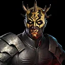
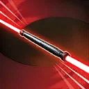
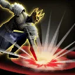

Savage Opress
Durable Attacker that crushes low-health units and becomes stronger when attacked

Durable Attacker that crushes low-health units and becomes stronger when attacked

Deal Physical damage to target enemy. Savage has a 50% chance to inflict Offense Down for 2 turns, doubled if he scores a critical hit.

Deal Physical damage to target enemy. If the target has 50% or less Health, this attack deals massive damage and can't be evaded. If this ability defeats an enemy, Savage gains Critical Chance Up and Critical Damage Up for 3 turns.
Sith allies gain 75% Defense and 30% Tenacity, halved for other allies.
Whenever Savage receives damage, he gains Defense Up, a stack of Heal Over Time, and Offense Up for 2 turns, and gains 30% Turn Meter.
Whenever Savage is critically hit, he dispels all debuffs on himself. At the end of his turn, Savage dispels all debuffs on a random other Sith ally and gains those debuffs for 1 turn.
Omicron Boost : While in Grand Arenas: Savage gains 50% Defense, Max Health, and Offense, and 30 Speed. At the start of the encounter, Savage gains 2 stacks of Resilient Defense. At the end of his turn, Savage gains 2 stacks of Resilient Defense (max 10) and 10% Turn Meter (max 50%) for each debuff on other Sith allies.
Whenever Savage is critically hit, he gains 16% Health Steal and Offense (stacking, max 160%) and all other Sith allies gain 4% Health Steal and Offense (stacking, max 40%), recover 15% Health and Protection, and gain 10% Turn Meter until the end of the encounter.
While Savage has Resilient Defense, he has +50% Defense per stack and is inflicted with Vulnerable, which can't be prevented or dispelled. Whenever Savage gains Taunt, he dispels it and gains 2 stacks of Resilient Defense.